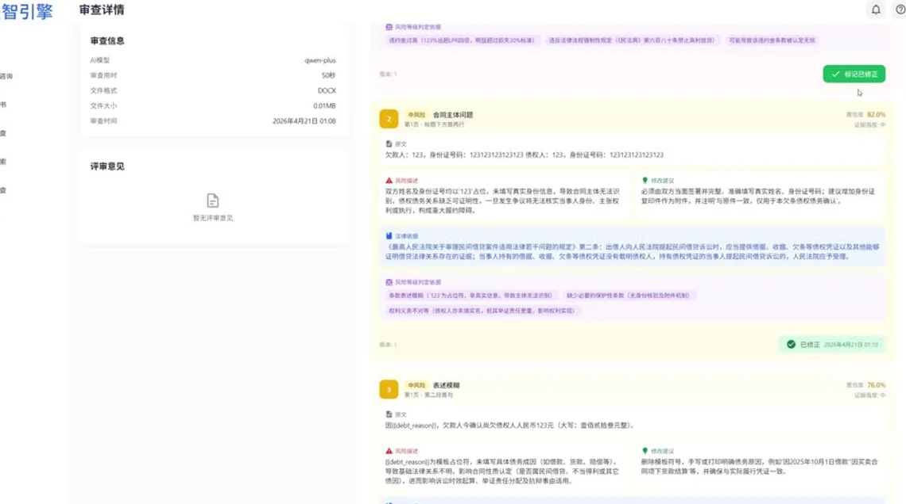

罗洋
AI 全栈工程师 ／ 实习意向
用技术把 AI 产品做起来、做完整、做落地。
物联网工程 · 本科在读
2027.07 起可到岗 · 意向城市待定
精选项目
01
KnowMate / AI 学习应用
2026.08 – 2026.10 · 团队项目 · 项目经理 / 移动端开发
面向 AI 学习场景，通过分类练习、上手引导和成长报告，帮助学习者规划下一步。
查看详情 →
- 移动端开发
- 参与登录与新手引导、个人页和成长报告的页面开发及整合，使用 React Native、TypeScript 与 Expo Router 组织页面、路由和交互。
- 流程与联调
- 参与 AI 故事引导流程、学习画像展示及接口联调，处理进度恢复、账号隔离、加载反馈与失败重试等状态。
- 团队交付
- 负责模块分工与成果验收，整合成员页面和接口，整理演示流程、项目材料与答辩说明。
- 展示说明
- 图中为练习页与成长报告的演示画面，演示数据不代表真实学习效果。日期为可核实的阶段开发记录。
查看项目仓库 ↗
02
FaceNoWorry / AI 求职应用
2026.03 – 2026.09 · 团队项目 · 项目经理 / 应用开发
面向求职准备的移动应用，包含简历分析与润色、练习和社区。点击页面图片可查看大图。
查看详情 →
- 简历与 AI 接入
- 参与简历管理和分析、润色页面开发，接入生成及结果查询接口；围绕简历 ID 组织加载、结果展示、超时处理与失败重试。
- 社区与登录
- 参与登录注册、新老用户判断，以及社区帖子、评论和关注等功能开发与接口对接；处理请求封装、鉴权状态和列表刷新。
- 团队交付
- 负责任务分配、页面与交互验收、项目整合和答辩材料准备；根据开发问题协调前后端联调。
- 验证范围
- 已有接口接入与部分登录流程验证记录；简历服务的完整在线端到端结果尚未确认。日期依据原始提交与阶段联调记录。
查看团队仓库 ↗
03

合同审查 · 视频演示画面
法智引擎 / AI 法律服务平台
团队项目 · 法律咨询与文档处理
面向个人、小微企业与基层法律服务场景，整合法律咨询、文书生成、合同审查、类案检索和合规自查。
查看详情 →
- 咨询与文书
- 演示覆盖咨询分类、多轮问答、历史会话与语音输入，以及模板选择、分步填表、文书预览、编辑、保存和导出操作。
- 审查与检索
- 展示合同上传、风险分级、法律依据、修改建议和修正标记；支持类案搜索、案例详情、历史检索与收藏，以及场景化合规问卷。
- 技术方案
- 设计文档采用 Vue 3、TypeScript、Vite、Arco Design 与 Node.js，涉及大模型服务、OCR、知识库与检索增强方案。底层部署与性能指标尚未复验。
- 展示范围
- 内容依据设计文档与演示视频整理，展示录制时的功能流程；AI 输出用于辅助参考，不替代专业律师意见。
04
医学影像与医患协作
- 01 / 患者端影像上传与批次管理
- 02 / 影像工作台DICOM 浏览与报告管理
- 03 / 医生端诊断申请与正式诊断
业务流程示意 · 依据项目交接文档
乳腺癌影像分析系统 / 医学影像应用
国家级创新创业项目 · 团队项目
围绕医学影像管理与医患协作，组织多模态影像上传、DICOM 浏览、样本导入和报告管理，连接患者诊断申请与医生诊断流程。
查看详情 →
- 影像与样本
- 项目文档描述 DICOM 与常见图片上传、文件夹批量导入、MRI / 超声 / 钼靶影像组织，以及 BrEaST、MIAS、CBIS-DDSM 公开数据集的导入与样本索引。
- 角色与流程
- 管理员、医生、患者三类角色；患者上传影像、查看批次报告并申请医生诊断，医生填写正式诊断，推进报告状态流转。
- 工程结构
- 前端使用 Vue 3、TypeScript、Vite、Pinia、Element Plus 与 Cornerstone；后端采用 Spring Boot、MyBatis、MySQL 和 JWT，文档提供 Docker Compose 部署流程。
- 实现边界
- 交接文档说明诊断与训练接口当前使用模拟数据，SAM2 分割仍需补接 Python / Py4J 服务；不将其表述为已完成的真实诊断、训练或临床验证成果。
查看团队仓库 ↗
技术能力
SKILLS
前端与移动端
JavaScript · TypeScript · React · React Native · Expo Router
具备移动端页面、组件拆分、路由导航、表单和状态管理的项目实践；接触 Redux Toolkit、AsyncStorage 与安全存储。可使用 HTML、CSS 和 JavaScript 制作响应式网页。
后端与接口联调
Python · FastAPI · REST API · Axios / Fetch
参与前后端接口对接、JSON 数据映射、登录鉴权和异步状态处理；能结合接口文档与日志排查请求、环境地址、超时和错误反馈问题，参与 Python / FastAPI 项目的开发与整合。
AI 应用接入
大模型 API · 提示词 · 结构化结果 · AI 交互流程
参与简历分析、润色与 AI 学习应用的服务接入和结果展示；处理长耗时请求、加载反馈、失败重试及降级结果。项目技术栈接触 LangChain 与向量检索相关组件。
工程实践与协作
Git · GitHub / Gitee · Android / ADB · 项目验收
具备分支协作、代码整合、移动端调试、APK 打包和本地环境联调实践；参与测试检查、问题定位与交付验证。承担任务拆分、进度协调、成果验收和技术材料整理。
项目中接触的数据与运行环境：MySQL、PostgreSQL / pgvector、Redis、SQLAlchemy、Docker Compose；个人参与范围以项目说明为准。
教育背景
EDUCATION
物联网工程 本科 · 在读
2024.09 – 2028.06（预计毕业）
- 学校
- —
关于我
ABOUT
我叫罗洋。
希望从 AI 应用开发实习开始，把项目经验用在真实产品中。
我的项目实践涉及 AI 学习、求职辅助、法律服务与医学影像等场景。在 KnowMate 和 FaceNoWorry 中，我负责分派任务、验收成果，同时参与页面开发与项目整合，并整理演示流程与答辩材料。